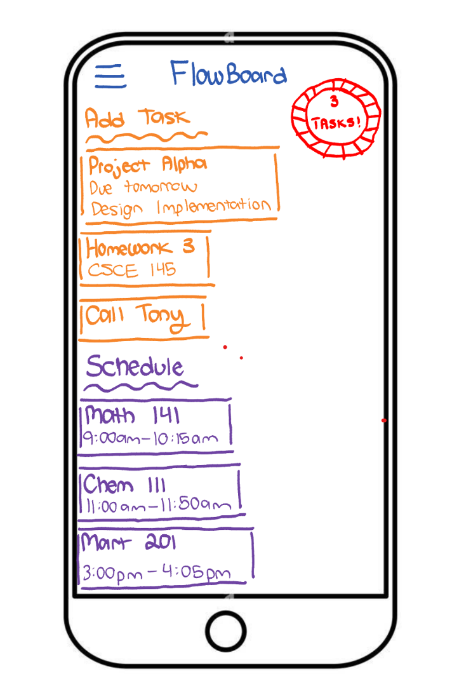

About me
My mission is to grow into a person who uplifts others to be the best person they can be,
achieve professional success through determination and dedication, and be remembered for my
heart-warming personality and kindness.
Highlighted projects
Problem Statement

Many first-year computer science students at the University of South Carolina struggle to manage their time effectively between coding projects,
coursework, and personal commitments, leading to increased stress and declines in academic performance.
Affinity Diagram

Time management problems among first-year CS students at USC stem from — inaccurate time estimation, weak motivation, lack of digital organization tools, limited academic support, and declining well-being.
These issues reinforce one another, leading to stress, missed deadlines, and lower academic performance.
Sketches

The FlowBoard sketches showcase a mobile app created to help students stay organized and manage their academic workload more effectively.
Sketch 1 features the Home Dashboard, where users can quickly see their current tasks and daily class schedule. Each task lists the course, due date, and a progress indicator to help students prioritize what needs attention.
Sketch 2 highlights the Add Task screen, which lets users input important details such as the task name, due date, course, and estimated time required. This makes planning study sessions more accurate and intentional.
Sketch 3 presents the Focus Timer, a productivity tool designed to keep students on track during work sessions. It includes controls to pause or end a session, along with a clear display of the remaining time.
Homework in CSCE 145
My Java homework assignments involve writing and testing code to practice programming concepts such as object-oriented design, data structures, and algorithms.